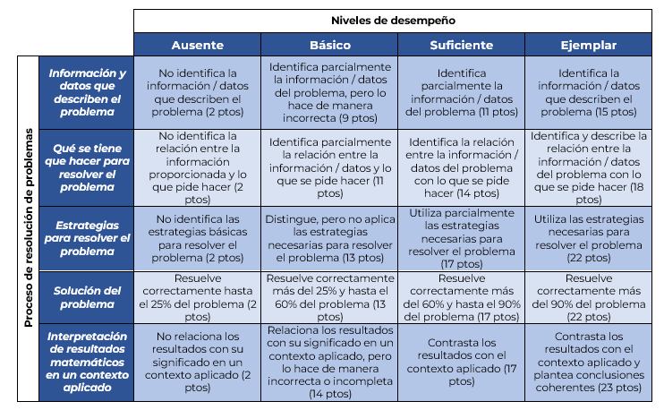

Resumen.
Se presentan los resultados de implementar una rúbrica de evaluación analítica, diseñada como guía metodológica para resolver y evaluar problemas matemáticos enfocados a la toma de decisiones en el ámbito empresarial. El estudio se realizó en un grupo de segundo semestre de nivel superior en el área económico administrativa de una universidad pública del centro occidente de México. La investigación es de tipo transversal descriptiva, cualitativa y cuantitativa. Para diseñar la rúbrica se tomaron cuatro elementos que la literatura describe como parte del proceso de resolución de problemas, y se propuso un quinto para la interpretación de resultados dentro del contexto. Los hallazgos indican que las cinco categorías mejoraron al final del ciclo escolar, comparados con los recabados al inicio. La categoría Encontrar la solución fue la de menor desempeño al inicio del curso, pero la que mostró mayor variación, mientras que Interpretar los resultados matemáticos en el contexto, fue la que registró el menor cambio.
Palabras clave:
toma de decisiones, habilidades matemáticas, recursos educativos
Abstract.
This paper presents the results of implementing an analytical assessment rubric, designed as a methodological guide for solving and evaluating mathematical problems focused on decision-making in the business environment. The study was conducted with a second-semester group of higher education students in the business field at a public university in west-central Mexico. The research is cross-sectional, descriptive, qualitative and quantitative. To design the rubric, four elements described in the literature as part of the problem-solving process were taken and a fifth was proposed. To design the rubric, four elements that the literature describes as part of the problem-solving process were taken, and a fifth was proposed for the interpretation of results within the context. The findings indicate that all five events improved by the end of the academic year compared to those recorded at the beginning. Finding the solution showed the lowest performance at the beginning of the course but also the greatest variation, while interpreting the mathematical results in context showed the least change.
Keywords:
decision making, mathematical skills, educational resources
Introducción
La toma de decisiones en los negocios es piedra angular para el éxito de las organizaciones ya que permite a los líderes enfrentar retos complejos, desarrollar estrategias innovadoras e implementar soluciones efectivas que ayuden al logro de los objetivos planteados, sobre todo en entornos inciertos y rápidamente cambiantes (Ruisli et al., 2025).
Las matemáticas juegan un papel primordial en muchas áreas del conocimiento y la relacionada con el ámbito de la administración de negocios no es la excepción, pues ayuda a desarrollar habilidades analíticas y de resolución de problemas, por ejemplo. Aquellos profesores dotados con experiencia matemática pueden contribuir de manera importante en la formación de estudiantes en el emprendimiento y la gestión de empresas (Lawal et al., 2025).
Los marcos de razonamiento lógico provistos por las matemáticas afectan positivamente las capacidades para análisis de datos, análisis de problemas, análisis de riesgos, administración financiera, planeación estratégica, resolución de problemas, innovación y toma efectiva de decisiones (Lawal et al., 2025; Ruisli et al., 2025).
Durante décadas, la capacidad de los estudiantes para emplear conocimientos matemáticos en la resolución de problemas aplicados ha sido un tema central en la investigación de la educación matemática (Cevibkas et al., 2022; Ukobizaba et al., 2021). Además, en el proceso de enseñanza-aprendizaje se destaca la dificultad de los estudiantes para pensar de manera crítica, ingrediente indispensable para la resolución de problemas.
Cevibkas et al., (2022) sostienen que aplicar el conocimiento matemático en el mundo real es una característica central de la literacidad matemática, por lo que fomentar esta competencia es una meta ampliamente perseguida en educación matemática. En el entorno educativo, resolver problemas faculta a los estudiantes a construir su aprendizaje a partir de situaciones de índole didáctica o reales, además de representar un elemento de evaluación que busca identificar y comprender su proceso de razonamiento en una situación específica, así como examinar las características de ese proceso (Pascual Vigil et al., 2020).
El propósito de la presente propuesta es lograr que los estudiantes desarrollen habilidades para resolver problemas de manera lógica y estructurada, para la toma de decisiones dentro de un contexto económico-empresarial, con la aplicación de conceptos y herramientas matemáticos de cálculo diferencial e integral de nivel superior y la guía de una rúbrica de evaluación analítica.
Antecedentes
El proceso de resolución de problemas matemáticos
A mediados de la década de los años 40 del siglo pasado, el matemático George Pólya estableció un marco referencial heurístico de cuatro etapas para describir el proceso de resolución de problemas matemáticos: comprender el problema, desarrollar un plan, ejecutarlo y examinar la solución. Aunque su propuesta se originó desde el área matemática, el modelo fue referente en otras áreas del conocimiento (Schoenfeld, 1987) (11)
Cuatro décadas más tarde, el matemático Alan Schoenfeld argumentó que además de los aspectos heurísticos o estrategias cognoscitivas propuestos por Pólya, se requieren otros elementos para describir la complejidad del proceso de resolución de problemas matemáticos, en particular: el dominio de conocimientos disciplinares; el manejo de estrategias metacognitivas que implican el autocontrol de los procesos de aprendizaje y el sistema de creencias de los estudiantes sobre la naturaleza de las matemáticas y su enseñanza (Schoenfeld, 1992) (8)
Por su parte, la perspectiva socio-constructivista establece que además del componente cognitivo para la resolución de problemas, la interacción con otras personas representa un factor que acelera el aprendizaje, pues la discusión que realiza favorece la creación de nuevos patrones de análisis y soluciones (Alonso-Berenguer et al., 2018) (7)
La revisión sistemática de literatura de Alonso Berenguer et al. (2021) (6) llevada a cabo en diversos tipos de publicaciones de dos décadas, identifica los recursos necesarios para abordar el proceso de resolución de problemas matemáticos: el manejo de conocimientos específicos, las habilidades matemáticas, las estrategias (heurísticas y metacognitivas), la algoritmización, la problematización, la contextualización y la transposición didáctica de los contenidos matemáticos.
Evaluación del proceso de resolución de problemas matemáticos
Durante décadas ha existido inquietud por parte de los educadores por implementar procesos que puedan utilizar para planificar, implementar, ejecutar y evaluar procesos de enseñanza-aprendizaje, con la finalidad de asegurar la construcción, apropiación y gestión del conocimiento de los estudiantes (Bancayán Oré, 2013)
El trabajo de Serres Segarra et al. (2024) (3), propone una rúbrica de evaluación para detectar el talento matemático en estudiantes de educación primaria. Mide características de la habilidad para las matemáticas y pensamiento matemático; proceso de resolución de problemas, nivel de razonamiento, rapidez en la resolución de problemas y capacidad de transversalidad; autonomía, invención de nuevos problemas e indagación matemática.
Ordaz Villegas y Acle Tomasini (2021) (4), utilizaron un sistema de rúbricas para medir el desempeño matemático en estudiantes de primero a tercero de primaria. En este estudio se pudieron identificar las fortalezas de los estudiantes, así como aquellas áreas con desempeño insuficiente y que pueden entorpecer la adquisición de conocimiento nuevo.
El estudio de Acebo-Gutiérrez y Rodríguez-Gallegos (2021) (1) propone una rúbrica para evaluar el nivel de modelación matemática en estudiantes de secundaria que incluyó cuatro dimensiones relativas a las fases de modelación matemática: la formulación del problema, la resolución, la interpretación y la validación. Los autores sugieren este tipo de instrumento para promover el aprendizaje de las matemáticas mediante estrategias de modelación.
El estudio de Flores López y Auzmendi Escribano (2018) (2) situado en torno a razones de género y étnia en el contexto de la educación superior, expone que las competencias para resolver problemas matemáticos se relacionan con los procesos de pensar y razonar; argumentar y justificar, comunicar, modelar, representar y plantear y resolver problemas. Los resultados se obtuvieron a partir del diseño de un cuestionario de 32 ítems organizados en 6 competencias, que consistió en la categorización y la descripción de las propiedades, características y perfiles de las personas, grupos, comunidades, procesos y objetos sometidos a análisis.
Por su parte, Aravena Díaz et al. (2022) (5), realizaron un análisis de las características de habilidades STEM (Ciencia, Tecnología, Ingeniería y Matemáticas, por sus siglas en inglés), en estudiantes de primer año de ingeniería civil, industrial, informática y construcción, usando modelado matemático como puente entre los conceptos matemáticos y sus respectivas disciplinas. Este estudio se enfocó en el método de casos para medir: habilidades matemáticas de modelación y comunicación; habilidades científicas para formular hipótesis y realizar procesos investigativos; habilidades tecnológicas para el uso de medios y comunicación y habilidades de ingeniería para proponer soluciones y plantear conclusiones. Los resultados se obtuvieron mediante análisis de contenido de los trabajos de los estudiantes.
La revisión sistemática de literatura de Cevibkas et al. (2022), resalta que la principal discusión para medir la competencia de los estudiantes en modelación matemática, -que involucra la resolución de problemas-, se centra en Europa con predominancia en Alemania, África y Asia, en Norte y Sudamérica encontraron un número limitado de estudios. Adicionalmente, la mayoría de ellos se centran en el análisis del nivel de estudios medio superior y en menor medida, en nivel universitario.
Justificación
Autores como Flores López y Auzmendi Escribano (2018), resaltan la importancia de vincular los contenidos disciplinares de la matemática y su aplicación dentro del ámbito de formación profesional. En particular, existe evidencia de que los profesores que tienden a vincular los contenidos matemáticos con problemas aplicados, tienden a mejorar la formación estudiantil en el ámbito empresarial y de negocios (Lawal et al., 2025).
En relación con este entorno, los conceptos matemáticos abordados en el nivel de estudios superior se emplean para modelar funciones de costo, ingreso, utilidad y producción; para analizar cambios en su comportamiento, para calcular valores totales o promedio; para maximizar la producción, las ventas o la utilidad, para minimizar costos y reducir gastos en el inventario; para medir la sensibilidad de la demanda frente a cambios en los precios; para analizar el equilibrio entre los productores y consumidores de un producto o servicio en una economía; para saber cuánto valor de mercado se está captando a través del cálculo del excedente de los consumidores y de los productores, para calcular valores monetarios acumulados en el tiempo, por mencionar algunos ejemplos.
A pesar de su trascendencia, la resolución de problemas matemáticos es difícil para la mayoría de los estudiantes y se continúa buscando comprender su naturaleza compleja, con la finalidad de facilitar su enseñanza y aprendizaje (Alonso Berenguer et al., 2021).
La habilidad para resolver problemas es una competencia matemática que puede desarrollarse con una adecuada combinación de estrategias instruccionales, como lo pone de manifiesto la revisión sistemática de literatura de Cevibkas et al. (2022), mientras que estudios como el de Ukobizaba et al. (2021) adicionalmente resaltan la importancia de la evaluación. Estos últimos también afirman que las actividades de evaluación enriquecidas están ligadas al mejoramiento de las habilidades de los estudiantes para resolver problemas en la medida en la que estas tareas representan retos para la comprensión de aspectos conceptuales.
Aportaciones como la de Gómez Mena (2024) y González Garibay et al. (2020) consideran que, en un programa de estudios, es indispensable realizar una evaluación adecuada que aporte información sobre el avance del alumnado para poder diseñar acciones de mejora hacia el logro de mayores aprendizajes.
En el contexto de evolución de las instituciones educativas, se presenta la necesidad de introducir sistemas de evaluación que mejoren la validez y fiabilidad sobre las formas tradicionales y, más aún, que involucren al estudiante en ese proceso (Ríos Muñoz y Herrera Anaya, 2017; Valverde Berrocoso y Ciudad Gómez, 2014). En este sentido, una de las características de la evaluación para el aprendizaje es que considere proporcionar retroalimentación oportuna y específica a los estudiantes al mismo tiempo que brinda al profesor información sobre el logro de los aprendizajes esperados (Gómez Mena, 2024; Martínez González, 2020). Una buena evaluación debe fomentar en los estudiantes el autoaprendizaje y la autorregulación para que sean conscientes de sus prácticas y aprendizajes (Gómez Mena, 2024; Ríos Muñoz y Herrera Anaya, 2017).
Para autores como Sánchez Mendiola (2020) y Valverde Berrocoso y Ciudad Gómez (2014), la rúbrica es un instrumento recomendable para realizar evaluación del y para el aprendizaje. Desde la óptica de la evaluación formativa, su uso garantiza un aumento en el aprendizaje y en el rendimiento académico de los estudiantes (Fraile et al., 2017).
Para el diseño de la presente investigación, se consideró la noción de evaluación formativa derivada de la revisión sistemática de literatura de Gómez Mena (2024), cuya visión holística destaca su naturaleza continua, centrada en el mejoramiento del aprendizaje de los estudiantes, con énfasis en proveer retroalimentación oportuna y significativa y que permita ajustar las prácticas educativas cuando sea necesario.
Por su parte, las rúbricas pueden ayudar a los estudiantes a visualizar las metas del aprendizaje y las medidas en las que han sido adquiridas, a través de los criterios de valoración en conjunto con el nivel de logro de cada uno de ellos (Valverde Berrocoso y Ciudad Gómez, 2014). En términos específicos, la rúbrica analítica permite evaluar el desempeño del estudiantado, así como identificar fortalezas y debilidades en lo que se está evaluando (González Garibay et al., 2020), para reafirmar las primeras y emprender estrategias de corrección o mejora en las segundas (Gómez Mena, 2024; Rodríguez-Gallego, 2014).
Metodología
La investigación que se detalla a continuación es de tipo descriptivo transversal cuantitativa y cualitativa. Se realizó un muestreo no probabilístico por conveniencia y se diseñaron y aplicaron cuestionarios con preguntas medidas en escala de Likert de 5 niveles, dicotómicas y abiertas. Se diseñó y aplicó una rúbrica de evaluación analítica que comprende 5 categorías y 4 niveles de logro.
El estudio se realizó en un grupo de 47 estudiantes durante el segundo ciclo escolar de 2024, en una asignatura de matemáticas de segundo semestre en una universidad pública del centro occidente de México. Se presentan los resultados de implementar una rúbrica de evaluación analítica como guía para resolver problemas matemáticos en un contexto aplicado para resolver problemas y tomar decisiones en un contexto económico empresarial.
La asignatura comprende temas de cálculo diferencial en funciones de dos variables y cálculo integral en funciones de una variable, y que forma parte de los planes de estudio de las licenciaturas en Economía, Negocios Internacionales, Mercadotecnia, Administración, Administración Financiera y Sistemas, Recursos Humanos, y Gestión y Economía Ambiental, que representan la mitad de los programas educativos que se ofrecen en el campus del área económico administrativa de la Institución. La asignatura tiene como prerrequisito los temas de precálculo y cálculo diferencial de funciones de una variable que se cursan en el ciclo inmediato anterior.
Las clases se impartieron dos veces por semana en sesiones de dos horas cada una bajo el modelo de Aprendizaje Invertido (Flipped Learning Network, 2014). Por disposición institucional, el trabajo se llevó a cabo presencialmente durante tres semanas consecutivas más una semana de trabajo virtual asincrónico cada mes durante todo el ciclo escolar.
Se diseñó y aplicó una encuesta exploratoria al inicio del curso para indagar sobre las expectativas de los estudiantes con respecto a la asignatura, su contexto de estudio y trabajo, la percepción acerca de su desempeño en el proceso de resolución de problemas aplicados, entre otros. Al final del ciclo escolar, se realizó el mismo ejercicio con otro instrumento en el que además de los temas anteriores, se consultaron sus opiniones sobre diversos factores, entre los que destacan el diseño del curso, la forma de evaluación o el diseño y utilidad de la rúbrica.
Por su parte, la forma de evaluación del curso consistió en cuestionarios individuales con retroalimentación automática, evaluaciones rápidas en equipo y actividades integradoras en equipo al final de cada unidad de aprendizaje.
Para el diseño del recurso educativo se consideró una rúbrica de evaluación analítica para guiar y evaluar el trabajo de los estudiantes en la resolución de problemas aplicados en el contexto de las ciencias económico-administrativas. El instrumento comprende 5 categorías que representan las partes del proceso de resolución de problemas y 4 niveles de desempeño.
La literatura dispone de diversos enfoques que clasifican las etapas para resolver problemas. Para el presente estudio, las primeras cuatro categorías de la rúbrica se consideraron a partir de la propuesta de Pascual Vigil et al. (2020) y en este instrumento se incorporó una quinta para evaluar la interpretación de los resultados obtenidos en un contexto económico empresarial. Las categorías son:
Información y datos que describen el problema. Del planteamiento inicial del problema se extrae la información clave, por ejemplo: ¿es un problema de producción, de costos, de utilidad? ¿cuáles son las variables? ¿en qué unidades están medidas las variables? ¿cuál es la temporalidad del modelo?, entre otros.
Qué se tiene que hacer para resolver el problema. Se identifica la ruta que hay que seguir para obtener el resultado esperado a partir de los datos proporcionados en el problema.
Estrategias para resolver el problema. Cuáles son las herramientas matemáticas que se pueden emplear para llegar al resultado esperado, en otras palabras, el “cómo”.
Solución del problema. ¿Se obtuvo el resultado correcto? ¿hubo errores de cálculo?
Interpretación de los resultados en el contexto del problema. ¿Se logra dar un significado específico a los resultados del proceso realizado? ¿esta información se utiliza para orientar la toma de decisiones dentro del contexto del problema?
En relación a los niveles de desempeño, se consideraron cuatro: 1. Ausente, 2. Básico, 3. Suficiente y 4. Ejemplar. Para desarrollar los descriptores de logro, se utilizó la taxonomía para procesos de enseñanza-aprendizaje y evaluación de Anderson y Krathwohl adaptada al campo de la educación superior (Bancayán Oré, 2013), que tiene como pilar la taxonomía del dominio cognitivo de Bloom. Este autor afirma que la taxonomía en mención facilita la gestión del conocimiento, pues activa procesos de pensamiento secuenciales que aseguran adquirir y operacionalizar habilidades y conocimientos.
Para emitir calificación al estudiantado, se estableció una escala de valoración numérica sobre 100 puntos en la que se consideró cada etapa del proceso de resolución de problemas, su nivel de dificultad y de desempeño. La rúbrica se muestra en la Tabla 1.
Al inicio del ciclo escolar y con notificación anticipada a los estudiantes, se realizó una evaluación diagnóstica individual que consistió en resolver un problema aplicado en el ámbito administrativo y de negocios con los conceptos matemáticos aprendidos en la asignatura de matemáticas prerrequisito. Durante la prueba se permitió a los estudiantes usar formularios, notas de clase y calculadora científica.
Tabla 1. Rúbrica para evaluar la resolución de problemas matemáticos en un contexto aplicado. Fuente: Elaboración propia con base en la propuesta de Pascual Vigil et al. (2020) para resolver problemas y en la taxonomía para procesos de enseñanza-aprendizaje y evaluación de Anderson y Krathwohl (Bancayán Oré, 2013).
Hacia la tercera semana del curso, la rúbrica se presentó a los estudiantes y se utilizó con regularidad para resolver problemas durante las sesiones de trabajo presencial, con la finalidad de que aprendieran a trabajar con ella como guía en la resolución de problemas aplicados en el contexto de su formación profesional.

Al final de cada unidad de aprendizaje de las tres que comprende el programa de la asignatura, se realizó una actividad integradora en equipos de dos o tres personas que consistió en la resolución de uno o varios problemas aplicados en el contexto económico empresarial. En cada evaluación de esta naturaleza, se incorporaron los diferentes conceptos trabajados desde el primer tema del curso, es decir, fueron de naturaleza acumulativa. Para realizar estas actividades, los equipos tuvieron permitido usar la rúbrica, los materiales de clase y software especializado. Se especificó que no estaba permitido usar Inteligencia Artificial Generativa, ni hacer consultas con personas ajenas a su equipo.
En la sesión posterior a cada actividad integradora se realizó una revisión detallada del trabajo de los equipos con la finalidad de analizar las estrategias planteadas, los procesos realizados, los resultados obtenidos y sus diversas interpretaciones. Aun cuando la rúbrica proporciona retroalimentación inmediata una vez que se da a conocer la calificación, esta sesión permite a los estudiantes reflexionar sobre sus propios procesos y resultados y complementar su perspectiva con el trabajo realizado por otros compañeros.
Al finalizar el ciclo escolar, se realizó una evaluación individual que incluyó la resolución de un problema con los temas de la asignatura en la que los estudiantes utilizaron la rúbrica, materiales del curso y calculadora científica o software especializado.
Resultados y discusión
Las evaluaciones diagnósticas individuales, integradoras en equipo y finales individuales, se calificaron con la rúbrica de evaluación propuesta. Para el análisis de resultados, se consideró a los estudiantes que completaron el curso y que realizaron todas las actividades, es decir, un total 35 personas. Este grupo de alumnos tuvo una tasa de asistencia de 70% o más a las sesiones de trabajo presencial. A continuación, se presenta el análisis de resultados de las evaluaciones en torno a las cinco categorías que constituyen la rúbrica de evaluación analítica propuesta.
Examen diagnóstico
Los resultados del examen diagnóstico muestran que, en promedio de uno a cuatro, en la identificación de la Información y datos que describen el problema, obtuvieron 3.1; Qué se tiene que hacer para resolver el problema, 2.4; Estrategias para resolver el problema, 2.1; Solución del problema, 1.4 y finalmente, Interpretación de los resultados en el contexto del problema, 1.9. Estos resultados se aprecian en la Figura 1.
Figura 1. Resultados del examen diagnóstico. Fuente: Elaboración propia con datos del estudio.
Examen diagnóstico
Dado que la escala de medición de los niveles de logro se mide de uno a cuatro, los estudiantes mostraron el mejor desempeño en la Identificación y datos que describen el problema con un nivel Suficiente. Esto puede deberse a que en los problemas matemáticos académicos es común que se presenten algunas funciones, variables y un contexto, por ejemplo, para poder comenzar a trabajar. Por otro lado, algunos aspectos que suelen no ser tan evidentes para los estudiantes son las unidades de medición de las variables (que el modelo matemático considere cientos de unidades o miles de pesos, por ejemplo), la temporalidad (si las mediciones son mensuales, anuales, etc.), entre otros.
En las siguientes etapas del proceso, el desempeño de los estudiantes fue disminuyendo, y aun cuando tuvieron alguna claridad en cuanto a los datos presentados en la evaluación, fueron menos capaces de determinar Qué hacer para resolver el problema y menos aún para definir alguna Estrategia para resolverlo; en este último aspecto, el nivel encontrado fue Básico. Por su parte, encontrar la Solución presentó el índice más bajo de todas las mediciones, apenas por arriba de Insuficiente. En este sentido, se ha observado que los estudiantes frecuentemente cometen errores al no respetar la jerarquía de las operaciones, o al manipular la calculadora o utilizar algún software especializado, por ejemplo.
En cuanto a la Interpretación de resultados matemáticos en un contexto, se encontró una mayor habilidad con respecto a encontrar efectivamente la Solución, ubicándose un poco por debajo del nivel Básico. Los resultados de la encuesta realizada al inicio del ciclo escolar, indican que alrededor del 85% de los estudiantes consideraron ser capaces de encontrar la solución al problema, mientras que aproximadamente el 69% opinó que lo eran con respecto a interpretar los resultados obtenidos.
Actividades integradoras
A continuación, se presentan los resultados obtenidos en las actividades integradoras realizadas en equipo al finalizar cada una de las tres unidades de aprendizaje del curso. En promedio, la categoría Información y datos que describen el problema, contabilizó 2.7, 3.0 y 3.6 respectivamente; Qué se tiene que hacer para resolver el problema, 2.8, 2.8 y 3.8; Estrategias para resolver el problema, 2.6, 3.1 y 3.9; Solución del problema 1.3, 1.6 y 2.1 y, finalmente, Interpretación de resultados matemáticos en un contexto aplicado 2.2, 2 y 2.4. Estos resultados se muestran en la Figura 2.
Figura 2. Resultados de las tres actividades integradoras. Fuente: Elaboración propia con datos del estudio.
Actividades integradoras
En la primera actividad integradora, el análisis del trabajo en grupos refleja que la categoría Información y datos que describen el problema disminuyó un poco con respecto al desempeño individual, ya que pasó de 3.1 en promedio a 2.7. Sin embargo, Qué se tiene qué hacer para resolver el problema y Estrategias para resolver el problema, subieron de 2.4 a 2.8 y de 2.1 a 2.6, respectivamente. Estas tres categorías en su conjunto, se sitúan cerca del nivel Suficiente en la escala de los niveles de desempeño.
Por su parte, en esta actividad se observó un desempeño similar al individual, a la baja, de Solución del problema e Interpretación de resultados matemáticos en un contexto, de 1.4 a 1.3 y de 1.9 a 2.2 respectivamente, apenas por encima del nivel Insuficiente para el primer caso y Básico para el segundo.
Para la segunda actividad integradora, se pudo apreciar una leve mejoría en la Identificación y datos que describen el problema, Estrategias para resolverlo y Solución del problema. En cuanto a Qué se tiene que hacer para resolver el problema, no se observó ningún cambio pues se mantuvo en 2.8, cerca del nivel Suficiente, mientras que la Interpretación de resultados matemáticos en un contexto aplicado, reveló una ligera disminución de 2.2 a 2, apenas un nivel Básico.
Cabe mencionar que la primera unidad de aprendizaje del curso comprende contenidos de cálculo diferencial de funciones de dos variables que es consecutiva de la asignatura prerrequisito, que se trabaja con diferentes profesores con diversas metodologías y estrategias didácticas, formas de evaluación, etc., mientras que la segunda unidad incluye conceptos de cálculo integral de funciones de una variable, en específico de integración indefinida, y la tercera unidad trata la integración definida. En estas dos últimas, los temas se introducen por primera vez y se trabajan con todos los estudiantes al mismo tiempo, con los mismos materiales y bajo la misma dinámica de trabajo, lo que permite que la información y conceptos puedan fluir bajo una misma lógica de diseño.
Los resultados de la tercera y última actividad integradora mostraron mejoría en todas las categorías de la rúbrica con respecto a la anterior. En términos generales, Información y datos que describen el problema, Qué se tiene que hacer y Estrategias para resolverlo pasaron de estar por debajo del nivel Suficiente en la primera actividad a cerca del nivel Ejemplar en la última (de 2.7 a 3.6, 2.8 a 3.8 y 2.6 a 3.9, respectivamente).
La misma comparación entre actividades mostró cambio en Solución del problema, de 1.3 (apenas por encima de Insuficiente) a 2.1 (Básico), mientras que Interpretación de resultados matemáticos en un contexto pasó de 2.1 a 2.4, es decir, apenas por encima de Básico, lo que representó el rubro con el menor cambio en el trabajo reportado en grupos.
Comparativo de evaluaciones individuales
Las actividades realizadas en grupos no permiten identificar claramente cuáles son las aportaciones específicas de cada persona, ni en qué grado se hicieron. Los resultados de la evaluación final pretenden mostrar el impacto individual en cada parte del proceso de resolución de problemas aplicados. En Información y datos que describen el problema, la puntuación promedio pasó de 3.1 a 3.9, es decir, de nivel Suficiente a casi Ejemplar; Qué se tiene que hacer para resolver el problema, de 2.4 a 3.5, es decir, por encima de Suficiente; Estrategias para resolver el problema, de 2.1 a 3.3, o de Básico a un poco más que Suficiente; Solución del problema pasó de 1.4 a 2.8, es decir, de un poco más de Ausente a casi Suficiente; y la Interpretación de resultados matemáticos en un contexto, subió de 1.9 a 2.3, apenas por encima de un nivel Básico. Esta información se muestra en la Figura 3.
Figura 3. Comparativo de evaluaciones individuales. Fuente: Elaboración propia con datos del estudio.
Comparativo de evaluaciones individuales
Como se puede apreciar, al final del ciclo escolar, todas las categorías de la rúbrica mostraron mejoría con respecto a las mediciones realizadas al inicio del curso. Se destaca que los estudiantes en lo general mejoraron en su capacidad de identificar con claridad la Información y datos que describen el problema, como escala de medición de las variables, temporalidad, entre otros, es decir, el contexto específico de aplicación en contraste con el modelo matemático. La mejora reportada en este rubro representa el 26% con respecto al desempeño inicial encontrado.
Por su parte, Qué se tiene que hacer y Estrategias para resolver el problema, tienen incidencia directa en los contenidos disciplinares de la asignatura. Los estudiantes mostraron un buen avance en este sentido con una mejora de aproximadamente el 46% en el primer caso y del 57% en el segundo, con respecto al inicio del ciclo escolar.
Cabe resaltar que la categoría que mostró mayor cambio fue Solución del problema, con 100% de mejora según los resultados recabados. Sin representar un resultado final excelente, la evidencia sugiere que puede continuar mejorando. Este aspecto no se relaciona directamente con los temas de la asignatura, sino con una correcta sustitución de valores, la ejecución precisa de operaciones manuales y el manejo técnico adecuado de herramientas como calculadora científica o software especializado.
Por otro lado, tal como se constató en el análisis de las evaluaciones realizadas en equipo, la Interpretación de resultados en un contexto es la parte el proceso que requiere mayor atención, pues mostró la variación más moderada según los resultados individuales, con apenas 21% de mejora con respecto al inicio del curso.
Al final del ciclo escolar, se preguntó a los estudiantes si consideraban que había mejorado su habilidad para resolver problemas aplicados. Se encontraron opiniones como la de Fernando: “Sí, mejoró mucho con respecto a mis conocimientos antes de empezar esta materia, y considero que aprendí bien a interpretar los problemas matemáticos en un enfoque económico”, o la de Judith: “Sí, porque además que me servirán para el área laboral, me doy cuenta de cosas que están relacionadas”. La mayoría de los comentarios giraron en torno a la falta de dominio como el de Jaqueline: “Sí mejoró, pero no en su totalidad”, el de Celia: “Me ayudó a comprenderlos un poco más, aunque siento que me falta más práctica y guía”, o el de Ian: “Es lo que me ha costado trabajo, las aplicaciones a la economía. Aunque sea algo muy sencillo y que domine, cuando se habla en términos económicos me confunde demasiado”. Dado el contexto del área de formación profesional de los estudiantes, las autoras de este estudio consideramos deseable que logren un mejor desempeño en este rubro en particular; en concordancia con la opinión de Cevibkas et al. (2022) y con base en los resultados del estudio, un ciclo escolar parece ser insuficiente para logarlo.
La rúbrica de evaluación
Como un mecanismo de evaluación formativa, el instrumento propuesto permitió explorar el proceso de resolución de problemas de los estudiantes y comprender su proceso de razonamiento (Pascual Vigil et al., 2020; Valverde Berrocoso y Ciudad Gómez, 2014). A pesar de las ventajas que presenta este método de evaluación, la revisión sistemática de literatura de Cevibkas et al. (2022), realizada en 75 artículos académicos, mostró que solamente en el 3% de los materiales revisados se utilizaron rúbricas analíticas para comprobar la competencia de los estudiantes relacionada con el modelado y la resolución de problemas contextualizados.
En este estudio el 93% del grupo opinó que fue útil contar con la rúbrica para hacer las actividades integradoras en equipo, como se puede constatar en comentarios como el de Alessandra: “(Fue) muy útil para hacer lo posible para (lograr) lo que se requería”, que consideró el instrumento como una guía; el de Andrés: “Me gusta que a pesar de no tener el resultado exacto, cuenta mucho el proceso que utilizaste para hacerlo y el entendimiento que tuvimos del tema”, o el de David: “Está muy bien porque toma en cuenta que en matemáticas no sólo se trata del resultado, sino también de identificar la información, saber qué hacer con ella, hacer los cálculos necesarios, dar con el resultado y saber qué significa ese resultado”, que da cuenta de una consideración más amplia de lo que implicó contar con el instrumento durante el proceso de resolución de problemas.
Por su parte, tal como se plantea en la literatura, es indispensable que la calificación y retroalimentación se realicen con oportunidad (Gómez Mena, 2024; Martínez González, 2020), ya que postergar esta parte del proceso diluye sus beneficios potenciales. Algunos comentarios sobre las sesiones de retroalimentación refuerzan esta idea, como el de Eunice: “Me gustaron y me ayudaron ya que así pude aclarar dudas que surgieron en el momento del examen” o el de Diana: “Muy buenas porque nos ayudan a observar nuestros errores para mejorar en la siguiente actividad”. Hubo estudiantes que llevaron su reflexión más allá de una implicación personal, como lo ejemplifica el comentario de José, que mencionó que estas sesiones “son muy importantes para que la profesora esté actualizada sobre los procesos y dinámicas que sí están funcionando”, como lo señala Bancayán Oré (2013).
Por otro lado, la incorporación de una variedad de estrategias didácticas estableció las bases para desarrollar un ambiente de trabajo favorable para desarrollar habilidades para resolver problemas, como lo sugiere la revisión de literatura de Cevibkas et al. (2022), ya que alrededor del 93% de los estudiantes opinó que había recibido un alto o muy alto acompañamiento por parte de la profesora para dar seguimiento a las actividades del curso, mientras que aproximadamente el 83% consideró útil o muy útil el trabajo en equipo para realizar las actividades integradoras.
Finalmente, calificar con rúbrica analítica puede presentar ventajas en cuanto a la profundidad y calidad de la evaluación, pero no es automático ni rápido de ejecutar comparado con otras formas o instrumentos. En general se requiere revisar con detenimiento los ejercicios o trabajos de los estudiantes para constatar el nivel de logro en cada una de las categorías. Así mismo, el profesor debe conocer a fondo la rúbrica y no perder de vista la diversidad de posibilidades que se pueden presentar para considerar que se ha cumplido con un criterio. Este aspecto también es importante para ser consistente y objetivo en la evaluación.
Conclusiones
La aplicación de conceptos matemáticos en la resolución de problemas contextualizados en el nivel de estudios superior sigue siendo objeto de interés en matemática educativa. Por su parte, existen numerosas evidencias que constatan la dificultad que enfrentan los estudiantes para llevar a cabo este proceso. Resulta imperativo emplear mecanismos que coadyuven a mejorarlo pues se trata de competencias que se espera que tengan los egresados de las diferentes áreas del conocimiento.
Un instrumento que puede ayudar a lograrlo es la rúbrica de evaluación analítica, pues no solo permite a los docentes estudiar cómo es que los estudiantes realizan este proceso sino también, puede ser una guía para que estos tengan, en primer lugar, claridad en lo que se espera de ellos en las evaluaciones, sepan cómo lograrlo y, en última instancia, tomen decisiones en cuanto al nivel de logro que desean tener.
No es fácil usar la rúbrica si no se está familiarizado con el instrumento. Es recomendable trabajar con ella en el transcurso de las sesiones para que los alumnos sepan en la práctica lo que representa cada categoría de la rúbrica y reflexionen sobre cómo se debe abordar cada problema para lograr el nivel de desempeño deseado.
En términos generales, a pesar de las diferencias en las evaluaciones, ya sea por tipo de problema, tema o nivel de dificultad, los resultados presentados mostraron mejoría en los estudiantes en cada una de las diferentes etapas del proceso de resolución de problemas aplicados.
Aunque se trate de la misma asignatura, no puede dejar de mencionarse que el comportamiento de los grupos tiende a variar en función de diversas situaciones: el horario de clase (no es el mismo si es a las 7 de la mañana, a la 1 de la tarde o a las 8 de la noche); si los estudiantes toman la clase por primera vez o se encuentran recursando; si trabajan o no; el número total de asignaturas en el ciclo escolar; entre otras. Estas particularidades pueden afectar el tiempo y atención dedicados a la asignatura y finalmente el rendimiento de los estudiantes, por lo que la aplicación de la rúbrica para evaluar la resolución de problemas aplicados, puede presentar diferentes resultados de acuerdo al contexto de aplicación.
Por otro lado, los resultados de la evaluación con la rúbrica pueden variar tratándose de problemas académicos de mayor complejidad que posiblemente aparecerán en etapas más avanzadas en su formación profesional o de aquellos presentes en el ámbito laboral.
Como trabajo futuro, se propone investigar si existe relación entre la asistencia a las sesiones presenciales y la mejoría de los estudiantes en el proceso de resolución de problemas; si se podría aspirar a obtener resultados similares en el caso de realizar las actividades integradoras individualmente en lugar de en equipos; hacer un análisis comparativo de la resolución de problemas académicos con problemas reales del contexto administrativo; cómo incide el diseño del curso en el desarrollo de habilidades para resolver problemas; dar seguimiento a estudiantes que hubieran trabajado con la rúbrica en el curso prerrequisito y cómo puede emplearse la Inteligencia Artificial Generativa para mejorar el proceso para resolver problemas.
Por último, se hace énfasis en que el instrumento propuesto se puede utilizar para realizar evaluaciones de trabajo individual o en grupos, en materias de matemáticas de diferentes áreas de formación profesional o grados académicos, pues se enfoca en las diferentes etapas del proceso de resolución de problemas.
Referencias
Acebo-Gutiérrez, C. J., y Rodríguez-Gallegos, R. (2021). Diseño y validación de rúbrica para la evaluación de modelación matemática en alumnos de secundaria. Revista Científica, 40(1), 13-29. https://www.redalyc.org/journal/5043/504371976003/html/
Alonso-Berenguer, I., Gorina-Sánchez, A., Iglesias-Domecq, N., y Álvarez Esteven, J. (2018). Pautas para implementar la enseñanza de la Matemática a través de la resolución de problemas. Maestro y Sociedad, 3, 66-81. https://www.studocu.com/latam/document/universidad-nacional-autonoma-de-honduras/matematicas/pautas-para-la-ensenanza-de-matematicas-a-traves-de-problemas-2018/134458573
Alonso Berenguer, I., Gorina Sánchez, A., y Salgado Castillo, A. (2021). Sistematización de experiencias sobre la investigación en didáctica de la resolución de problemas matemáticos. Mendive. Revista De Educación, 19(1), 285–303. http://mendive.upr.edu.cu/index.php/MendiveUPR/article/view/2129
Aravena Díaz, M. D., Díaz Levicoy, D., Rodríguez Alveal, F., y Cárcamo Mansilla, N. (2022). Estudio de caso y modelado matemático en la formación de ingenieros. Caracterización de habilidades STEM. Ingeniare. Revista chilena de ingeniería, 30(1), 37-56. https://www.scielo.cl/scielo.php?script=sci_arttext&pid=S0718-33052022000100037&lng=en&nrm=iso&tlng=en
Bancayán Oré, C. (2013). Operacionalización de la taxonomía de Anderson y Krathwohl para la docencia universitaria. PAIDEIA XXI, 3(4), 109-119. https://revistas.urp.edu.pe/index.php/Paideia/article/download/931/847
Cevikbas, M., Kaiser, G., y Schukajlow, S. (2022). A systematic literature review of the current discussion on mathematical modelling competencies: State-of-the-art developments in conceptualizing, measuring, and fostering. Educational Studies in Mathematics, 109, 205–236. https://link.springer.com/article/10.1007/s10649-021-10104-6
Flipped Learning Network (FLN). (2014). The Four Pillars of Flipped Learning. https://www.flippedlearning.org/definition
Flores López, W. O., y Auzmendi Escribano, E. (2018). Valoración del estudiantado universitario sobre las competencias matemáticas para la resolución de problemas. Revista Ciencia e interculturalidad, 22(1), 29–46. https://doi.org/10.5377/rci.v22i1.6549
Fraile, J., Pardo, R. y Panadero, E. (2017). ¿Cómo emplear las rúbricas para implementar una verdadera evaluación formativa? Revista Complutense de Educación, 28(4), 1321-1334. http://dx.doi.org/10.5209/RCED.51915
Gómez Mena, E. A. (2024). La evaluación formativa en la educación media como estrategia de fortalecimiento del aprendizaje responsable de los adolescentes. Revista Palobra “palabra que obra”, 24(1), 8-25. https://doi.org/10.32997/2346-2884-vol.24-num.1-2024-4835
González Garibay, V., Sierra González, R. y Sosa Ramírez, K. P. (2020). Cap. 6 Rúbrica. En Sánchez Mendiola, M., y Martínez González, A. (Ed). Evaluación del y para el aprendizaje: instrumentos y estrategias (pp. 109-125). México: UNAM. https://www.puees.unam.mx/sapa/dwnf/114/6.Sanchez-Mendiola_2020_Evaluacion.pdf
Lawal, A. A., Salman, M. F., Aleshinloye, N. I., y Ameen, K, S. (2025). Leveraging Mathematical Expertise: Empowering mathematics teachers for entrepreneurial ventures. Ilorin Journal of Education (IJE), 45(2), 237-257. https://ije.unilorinedu.sch.ng/index.php/ije/article/download/253/208/234
Martínez González, A. (2020). Cap. 2 Evaluación para el aprendizaje. En Sánchez Mendiola, M., y Martínez González, A. (Ed). Evaluación del y para el aprendizaje: instrumentos y estrategias (pp. 41-49). México: UNAM. https://www.puees.unam.mx/sapa/dwnf/114/6.Sanchez-Mendiola_2020_Evaluacion.pdf
Ordaz Villegas, G., y Acle Tomasini, G. (2021). Desempeño matemático. Evaluación por rúbricas en los primeros grados de educación básica. Perfiles Educativos, 43(173), 76-92. https://doi.org/10.22201/iisue.24486167e.2021.173.59772
Pascual Vigil, A., Trejo Rojas, C., y Martínez González, A. (2020). Cap. 14 Resolución de problemas. En Sánchez Mendiola, M., y Martínez González, A. (Ed). Evaluación del y para el aprendizaje: instrumentos y estrategias (pp. 239-258). México: UNAM. https://www.puees.unam.mx/sapa/dwnf/114/6.Sanchez-Mendiola_2020_Evaluacion.pdf
Ríos Muñoz, D. y Herrera Anaya, D. (2017). Los desafíos de la evaluación por competencias en el ámbito educativo. Educ. Pesqui., 43(4), 1073-1086. São Paulo. https://doi.org/10.1590/S1678-4634201706164230
Rodríguez-Gallego, M. R. (2014). Evidenciar competencias con rúbricas de evaluación. EA, Escuela Abierta, 17, 117-134. https://ea.ceuandalucia.es/index.php/EA/article/view/57/34
Ruisli, M., Pradana, B. L., Brotosaputro, G., y Ramírez, S. (2025). Analysis of the relationship between understanding mathematical logic and managerial decision-making effectiveness. Aptisi Transactions on Management, 9(1), 40-49. https://ijc.ilearning.co/index.php/ATM/article/view/2407
Sánchez Mendiola, M. (2020). Cap. 1 Evaluación del aprendizaje. En Sánchez Mendiola, M., y Martínez González, A. (Ed). Evaluación del y para el aprendizaje: instrumentos y estrategias (pp. 17-39). México: UNAM. https://www.puees.unam.mx/sapa/dwnf/114/6.Sanchez-Mendiola_2020_Evaluacion.pdf
Serres Segarra, G., López-Serentill, P., y Alsina, Á. (2024). Validez y fiabilidad de una rúbrica para detectar el talento matemático en educación primaria. Revista de Educación Inclusiva, 17(1), 258-279. https://www.researchgate.net/publication/382069380_Validez_y_fiabilidad_de_una_rubrica_para_detectar_el_talento_matematico_en_Educacion_Primaria
Schoenfeld, A. (1987). Pólya, problem solving, and education. Mathematics magazine, 60(5), 283-291.
Schoenfeld, A. H. (1992). Learning to think mathematically: Problem solving, metacognition, and sense making in mathematics. En D. A. Grouws (Ed.), Handbook of research on mathematics teaching (pp. 334-370). McMillan Publishing. https://www.researchgate.net/publication/289963462_Learning_to_think_mathematically_Problem_solving_metacognition_and_sense_making_in_mathematics
Ukobizaba, F., Nizeyimana, G., y Mukuka, A. (2021). Assessment Strategies for Enhancing Student´s Mathematical Problem-solving Skills: A Review of Literature. EURASIA Journal of Mathematics, Science and Technology Education, 17(3). https://doi.org/10.29333/ejmste/9728
Valverde Berrocoso, J., y Ciudad Gómez, A. (2014). El uso de e-rúbricas para la evaluación de Competencias en estudiantes universitarios. Estudio sobre fiabilidad del instrumento. Revista de docencia Universitaria, 12(1), 49-79. https://polipapers.upv.es/index.php/REDU/article/view/6415
Licencia: Esta obra está protegida bajo una Licencia Creative Commons Atribución-CompartirIgual 4.0 Internacional.